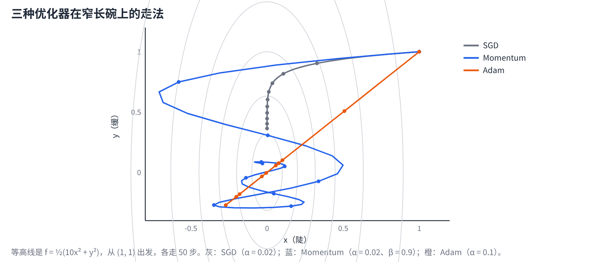
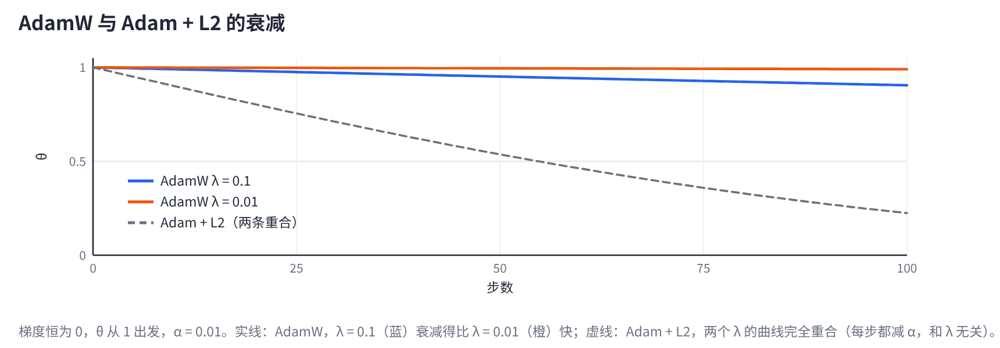
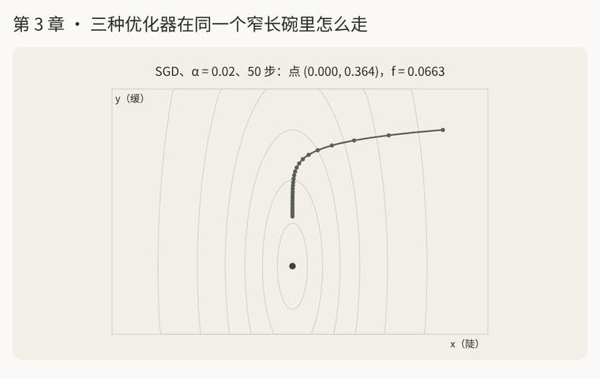

第 3 章 · 优化器：SGD → Momentum → Adam → AdamW，每一步怎么挪
本地运行
git clone https://github.com/wikieden/beyond-transformer
cd beyond-transformer/code/notebooks
pip install jupyterlab torch numpy
jupyter lab ch03_optimizers.ipynb也可以下载后直接用 VS Code 打开 .ipynb 运行。需要 GPU 的章节在 Colab 里选「代码执行程序 → 更改运行时类型 → GPU」。
本章回答：有了梯度，“往反方向挪一步”看似简单，可一步迈多大？为什么 SGD 在“窄长的山谷”里会来回打转？动量（Momentum）在帮什么忙？Adam 为什么给每个参数配一个自己的步长，开头的“偏差修正”修的是什么？AdamW 的 W 改了哪一行，为什么“Adam + L2”和它不一样？用 Adam 训练，每个参数要多存几份？
讲解日期：2026-11-25 · 上一章：第 2 章 梯度与反向传播 · 下一章：第 4 章 学习率调度与梯度裁剪
对应原文：CS336 a1 handoutcs336-spring2025/materials/text/cs336_spring2025_assignment1_basics.txt§4.2 式 19 L1418–L1426、§4.3 AdamW 与 Algorithm 1 L1520–L1555；Adammath-and-eval-stats/materials/text/papers/adam-1412.6980.txtAlgorithm 1 L75–L94、偏差修正 L101–L120；AdamWmath-and-eval-stats/materials/text/papers/adamw-decoupled-weight-decay-1711.05101.txt摘要与引言 L16–L66（“L2 正则和 weight decay 在 Adam 里不等价”）；AIAYN §5.3 L363–L376（原版用 Adam，β₂ = 0.98）
本章缩写：SGD = Stochastic Gradient Descent（随机 / 梯度 / 下降）；Adam = Adaptive Moment estimation（自适应 / 矩 / 估计）；AdamW = Adam with decoupled Weight decay（解耦的权重衰减）；β₁、β₂（读作“贝塔一、贝塔二”：一阶、二阶矩的衰减系数）；m、v = 一阶矩（梯度的滑动平均）、二阶矩（梯度平方的滑动平均）；m̂、v̂（读作“m 帽、v 帽”：偏差修正后的 m、v）；ε（读作“艾普西隆”：防止除零的小数）；λ（读作“兰姆达”：权重衰减系数）；L2 = 平方和正则（在 loss 上加 ½λ‖θ‖²）。全部缩写见 附录 · 缩写与术语表
讲解
第一步：SGD：学习率被最陡的方向卡住（2026-11-25）
类比：在一条又窄又长的山谷里下山。 谷底是一条缓缓下降的长沟，两侧却是陡坡。你每一步都朝“当前最陡的方向”走，结果主要在两侧坡之间横跳，顺着沟往下走得很慢。步子迈大一点，横跳就越跳越高，直接跳出山谷。
用一个“窄长的碗”当 loss：
x 方向陡（系数 10），y 方向缓（系数 1）。SGD 一步：\(\theta \leftarrow \theta - \alpha\nabla f\)，拆开就是
数字演示（从 (1, 1) 出发，走 50 步）：
| 学习率 α | x 每步乘 1 − 10α | y 每步乘 1 − α | 50 步后 f |
|---|---|---|---|
| 0.05 | +0.50（稳） | 0.95（慢） | 0.0030 |
| 0.15 | −0.50（来回跳，但收敛） | 0.85 | ≈ 0 |
| 0.21 | −1.10（越跳越大） | 0.79 | 68903（发散） |
x 方向要求 |1 − 10α| < 1，也就是 α < 0.2；可 y 方向想走快，最好 α 大。步长被最陡的方向卡住，平缓的方向只能慢慢挪。大模型的 loss 面在不同参数方向上的陡峭程度差别比这大得多，这是 SGD 训 Transformer 很难调的根本原因。
一句话：SGD 每个方向用同一个学习率，最陡的方向决定了学习率的上限，平缓的方向就走得很慢。
第二步：Momentum：带着惯性滚下去（2026-11-25）
类比：推一个铁球下山。 铁球有惯性：两侧来回的推力互相抵消，顺着沟方向的推力一直同号、越积越大。
v 是“速度”，等于过去梯度的加权和（越早的梯度乘越多次 β，影响越小）。β = 0.9 时，一直同号的梯度会累积到约 1/(1 − β) = 10 倍；来回变号的梯度互相抵消。
数字演示（α = 0.02，50 步）：
| 方法 | 50 步后的点 | f |
|---|---|---|
| SGD | (0.0000, 0.3642) | 0.0663 |
| Momentum（β = 0.9） | (−0.0305, 0.0739) | 0.0074 |
同样的学习率，动量把缓慢的 y 方向推快了，f 小了约 9 倍。x 方向有一点过冲（走到 −0.03），这是惯性的代价。
一句话：动量把过去的梯度累积成速度，同方向的推力越积越大、来回的推力互相抵消，平缓方向也走得快了。
第三步：Adam：每个参数一个自己的步长（2026-11-25）
类比：每个参数配一个“步幅表”。 某个方向一直很陡，就把这个方向的步子缩小；一直很平，就放大。Adam 用“梯度平方的滑动平均”来量每个方向有多陡。
Adam 的 Algorithm 1（L75–L94）：
| 符号 | 意思 |
|---|---|
| m | 一阶矩：梯度的滑动平均（相当于动量） |
| v | 二阶矩：梯度平方的滑动平均（每个方向有多陡） |
| t | 第几步，从 1 数 |
| m̂、v̂ | 偏差修正后的 m、v |
| \(\hat m/\sqrt{\hat v}\) | 逐元素相除：每个参数的步长被自己的梯度大小“归一化” |
偏差修正修的是什么（L101–L120）：m、v 从 0 开始，前几步被 0 拖着，偏小。第 1 步、梯度 g = 4、β₁ = 0.9、β₂ = 0.999：
| 量 | 不修正 | 修正后 |
|---|---|---|
| m | 0.1 × 4 = 0.40 | 0.40 / (1 − 0.9) = 4.00 |
| v | 0.001 × 16 = 0.016 | 0.016 / (1 − 0.999) = 16.00 |
| 第一步走 | α × 4/√16 = α × 1 |
修正后，第一步每个参数都走 α 这么远（方向是梯度的符号），不管梯度本身是 4 还是 0.004。这就是 Adam “对梯度的尺度不敏感”的来源。
在窄长碗上（α = 0.1，从 (1, 1) 出发）：前 3 步是 (0.9, 0.9) → (0.8, 0.8) → (0.702, 0.702)，两个方向走得一样快，虽然 x 方向的梯度是 y 的 10 倍。50 步后 f = 0.00013。

图 3-1 · 等高线是 f(x, y) = ½(10x² + y²)，从 (1, 1) 出发。灰：SGD（α = 0.02），在缓的 y 方向走得很慢；蓝：Momentum（α = 0.02、β = 0.9），带着惯性冲下去、略有过冲；橙：Adam（α = 0.1），前几步沿对角线走，两个方向一样快一句话：Adam 用梯度的滑动平均当方向、用梯度平方的滑动平均给每个参数定步长；偏差修正让前几步不被初值 0 拖小。
第四步：AdamW：把权重衰减和梯度分开（2026-11-25）
问题：训练时常常希望参数不要太大（防止过拟合、让训练更稳），办法是每步把参数往 0 拉一点，叫权重衰减（weight decay）。对 SGD 来说，下面两种写法完全一样：
- 在 loss 上加 ½λ‖θ‖²（L2 正则），梯度多一项 λθ；
- 每步直接 θ ← θ − αλθ。
在 Adam 里不一样（AdamW 论文 L52–L66）：L2 那一项 λθ 混进了梯度，然后会被 \(\sqrt{\hat v}\) 除掉。一个参数梯度大，它的 v 大，衰减就被除得很小；梯度小，衰减反而被放大。衰减强度变得和梯度大小纠缠在一起。
AdamW 把衰减单独做（a1 Algorithm 1 最后一行，L1550）：
数字演示（梯度恒为 0，只看衰减；θ 从 1 出发，α = 0.01，100 步）：
| 方法 | λ = 0.1 | λ = 0.01 |
|---|---|---|
| AdamW | 0.9048（每步乘 1 − αλ） | 0.9900 |
| Adam + L2 | 0.2244 | 0.2244 |
Adam + L2 这里根本不看 λ：梯度只剩 λθ 一项，被 \(\sqrt{\hat v} = λθ\) 除掉以后，每步都走 α 这么远，不管 λ 多大多小。AdamW 的衰减量就是 αλθ，λ 是多少就衰减多少。

图 3-2 · 梯度为 0 时 θ 随步数的变化。实线：AdamW，λ = 0.1（蓝）和 0.01（橙）衰减速度不同；虚线：Adam + L2，两个 λ 的曲线完全重合，每步都减 α，和 λ 无关注意 a1 的写法把偏差修正并进了学习率：\(\alpha_t = \alpha\sqrt{1-\beta_2^t}/(1-\beta_1^t)\)，再用没修正的 m、v 去除（L1546–L1549）。和上面的 m̂/√v̂ 只差在 ε 的位置，效果一样。大模型常用 (β₁, β₂) = (0.9, 0.95)（L1535–L1536），比默认的 0.999 更快地忘掉旧梯度。
场景代码：PyTorch 的 AdamW（真实库调用；本书环境没装 torch，没跑过）：
opt = torch.optim.AdamW(model.parameters(), lr=3e-4, betas=(0.9, 0.95), eps=1e-8, weight_decay=0.1)
loss.backward()
opt.step() # 先按 m̂/√v̂ 走一步，再 θ ← θ − lr·λ·θ
opt.zero_grad()
一句话：AdamW 把权重衰减从梯度里拿出来，单独做 θ ← θ − αλθ；Adam + L2 的衰减会被 √v̂ 除掉，强度和 λ、和梯度大小都纠缠在一起。
第五步：每个参数要多存几份（2026-11-25）
SGD 只需要参数本身和梯度；Momentum 多一份 v；Adam / AdamW 多两份 m、v（“stateful”，L1530–L1531）。用 fp32（每个数 4 字节）训练：
| 存什么 | 每个参数 | 1 亿参数 |
|---|---|---|
| 参数 | 4 B | 0.4 GB |
| 梯度 | 4 B | 0.4 GB |
| m | 4 B | 0.4 GB |
| v | 4 B | 0.4 GB |
| 合计 | 16 B | 1.6 GB |
这还不算前向存下的中间结果（激活值，第 2 章）。优化器状态是参数的两倍，所以大模型训练要把它切到多张卡上（ZeRO，见《数学与实验统计》第 46 章）。新的优化器（Muon、Shampoo、Lion 等）也常在“少存一份状态”上做文章，见第 43 章 现代优化器。
一句话：AdamW 每个参数要存参数、梯度、m、v 四份，fp32 下 16 字节，优化器状态是参数的两倍。
动画演示：四种优化器在同一个碗里怎么走

可交互版：animations/03-optimizers.html（滑块：步数、学习率；下拉切换 SGD / Momentum / Adam）。
怎么看：
- 等高线是窄长碗，从 (1, 1) 出发（第一步）；
- SGD：学习率拖过 0.2，x 方向开始越跳越大、发散；
- Momentum：轨迹带惯性，沿着沟冲下去，有一点过冲（第二步）；
- Adam：开头沿对角线走，两个方向一样快（第三步）；右上角是当前的 f。
练习与作答记录
题 1（第一步）：f(x, y) = ½(4x² + y²)，SGD 的学习率最大能取多少才不发散？为什么由 x 方向决定？
题 2（第二步）：梯度一直是 1，β = 0.9，Momentum 的速度 v 从 0 开始，第 1、2、3 步各是多少？很多步以后趋近多少？
题 3（第三步）：Adam 第 1 步，梯度 g = 0.001，β₁ = 0.9、β₂ = 0.999。不做偏差修正时，这一步走多远（用 α 表示，忽略 ε）？做了修正呢？
题 4（第四、五步）：（a）用自己的话说 AdamW 和 Adam + L2 的区别。（b）一个 7 亿参数的模型用 AdamW、fp32 训练，参数 + 梯度 + 优化器状态一共多少 GB？
口诀
窄长山谷 SGD，陡的方向卡步长，缓的方向慢慢挪。
动量像铁球，同向越滚越快，来回互相抵消。
Adam 每参数一把尺，梯度平方量陡缓；开头被零拖小，修正除以一减 β 的 t 次方。
衰减别混进梯度，AdamW 单独减 αλθ。
参数梯度加两矩，十六字节一个参数。
本章复习卡片
必背：B22–B23（B22 SGD 的步长上限、Momentum 与 Adam 的更新式和偏差修正；B23 AdamW 为什么要解耦权重衰减、每个参数存几份）。练习做完后，按答错、卡住的地方再补。
附录 · 延伸阅读
留给以后深入学习用，不影响本章主线。★ 是建议先读的。
推荐阅读
| 读什么 | 读哪里 | 读它为了什么 |
|---|---|---|
| ★ CS336 a1 handout | §4.3 L1520–L1555（Algorithm 1） | 作业里要实现的 AdamW 写法 |
| ★ Adam（Kingma & Ba 2015） | Algorithm 1 L75–L94；§3 偏差修正 L101–L120 | 一、二阶矩与偏差修正 |
| ★ AdamW（Loshchilov & Hutter 2019） | 摘要与引言 L16–L66；Algorithm 2 | 为什么 L2 在 Adam 里不等于权重衰减 |
| 《数学与实验统计》第 14 章 无约束优化 | 条件数、动量 | 窄长山谷的数学：条件数决定收敛速度 |
| 《数学与实验统计》第 43 章 现代优化器 | Shampoo、Muon、Lion | AdamW 之后的新优化器 |
数学原理
- 二次函数上的 SGD：沿特征方向 i，每步乘 (1 − αλᵢ)；稳定要求 α < 2/λ_max，收敛速度由 λ_min/λ_max（条件数的倒数）决定。
- 动量的放大倍数：梯度恒为 g 时，v → g/(1 − β)。
- 偏差修正：m_t = (1 − β₁)Σβ₁^{t−i}g_i，若 g 恒定则 E[m_t] = (1 − β₁^t)g，除以 1 − β₁^t 正好补回来。
- Adam 的尺度不变性：梯度整体乘 c，m̂ 乘 c、√v̂ 也乘 c，步长不变。
- 解耦衰减：AdamW 每步 θ ← (1 − αλ)θ 再走梯度步；Adam + L2 的衰减项被逐元素除以 √v̂。
公式清单
| 公式 | 意思 |
|---|---|
| \(\theta \leftarrow \theta - \alpha g\) | SGD |
| \(v \leftarrow \beta v + g\)，\(\theta \leftarrow \theta - \alpha v\) | Momentum |
| \(m \leftarrow \beta_1 m + (1-\beta_1)g\)，\(v \leftarrow \beta_2 v + (1-\beta_2)g^2\) | Adam 的两个矩 |
| \(\hat m = m/(1-\beta_1^t)\)，\(\hat v = v/(1-\beta_2^t)\) | 偏差修正 |
| \(\theta \leftarrow \theta - \alpha\hat m/(\sqrt{\hat v}+\varepsilon)\) | Adam 一步 |
| \(\theta \leftarrow \theta - \alpha\lambda\theta\) | AdamW 的解耦衰减 |
代码对照：把本章的数字用代码算一遍
NumPy。代码在仓库本地
beyond-transformer/solutions/chapter-code/ch03_optimizers.py，配套测试tests/test_ch03.py，notebook 在notebooks/ch03_optimizers.ipynb：
bash cd beyond-transformer/solutions/chapter-code uv run python ch03_optimizers.py uv run pytest tests/test_ch03.py
讲义 ↔ 代码：
| 讲义 | 公式 | 写法 | 跑出来 |
|---|---|---|---|
| 第一步 SGD | θ − αg | run("sgd", lr=...) |
0.05 / 0.15 收敛，0.21 发散 |
| 第二步 Momentum | v ← βv + g | run("momentum", lr=0.02) |
f = 0.0074 vs SGD 0.0663 |
| 第三步 偏差修正 | m/(1 − β₁ᵗ) | adam_first_step(4.0) |
m̂ = 4、v̂ = 16 |
| 第三步 Adam | m̂/√v̂ | run("adam", lr=0.1) |
前 3 步沿对角线 |
| 第四步 衰减 | AdamW vs L2 | decay_compare(wd=...) |
0.9048 vs 0.2244 |
| 第五步 状态 | 16 B / 参数 | state_bytes(1e8) |
1.6 GB |
关键几行：
m = b1 * m + (1 - b1) * g # 一阶矩
s = b2 * s + (1 - b2) * g * g # 二阶矩
p = p - lr * (m / (1 - b1**t)) / (np.sqrt(s / (1 - b2**t)) + eps) # 修正后再除
tw = tw - lr * wd * tw # AdamW：衰减单独做
代码里才看得到的 2 件事：
- t 从 1 数：t = 0 时 1 − β₁⁰ = 0，会除零。a1 的 Algorithm 1 也特意写了“t starts at 1”。
- 这里只是标量 / 二维的演示：作业要实现的是
torch.optim.Optimizer的子类，状态按参数存在self.state[p]里，那部分留给自己写。
自己改一改（不影响练习答案）：
- 把
run的起点改成 (1, 0)（只有陡的方向），SGD 和 Adam 谁更快？ - 把 Adam 的 β₂ 改成 0.95，50 步后的 f 怎么变？